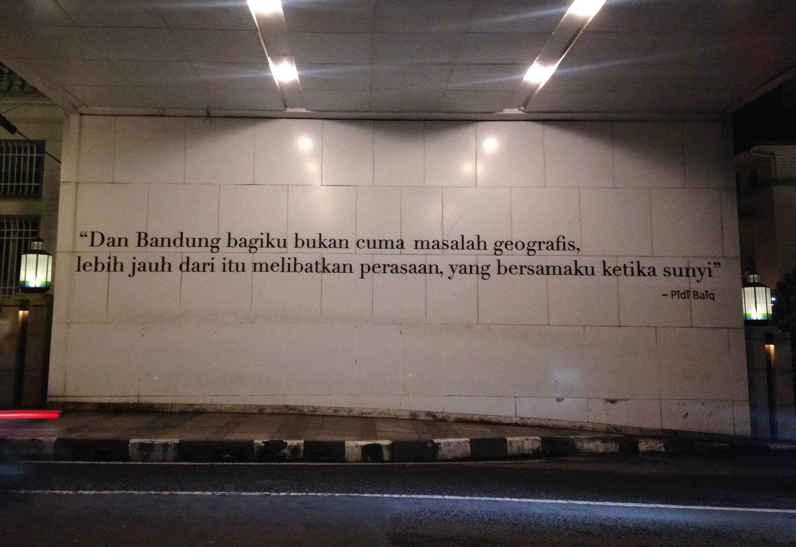

Sejarah

Kata Bandung berasal dari kata bendung atau bendungan karena terbendungnya sungai Citarum oleh lava Gunung Tangkuban Parahu yang lalu membentuk telaga. Legenda yang diceritakan oleh orang-orang tua di Bandung mengatakan bahwa nama Bandung diambil dari sebuah kendaraan air yang terdiri dari dua perahu yang diikat berdampingan yang disebut perahu bandung yang digunakan oleh Bupati Bandung, R.A. Wiranatakusumah II, untuk melayari Ci Tarum dalam mencari tempat kedudukan kabupaten yang baru untuk menggantikan ibu kota yang lama di Dayeuhkolot.
Berdasarkan filosofi Sunda, kata Bandung juga berasal dari kalimat Nga-Bandung-an Banda Indung, yang merupakan kalimat sakral dan luhur karena mengandung nilai ajaran Sunda. Nga-Bandung-an artinya menyaksikan atau bersaksi. Banda adalah segala sesuatu yang berada di alam hidup yaitu di bumi dan atmosfer, baik makhluk hidup maupun benda mati. Sinonim dari banda adalah harta. Indung berarti Ibu atau Bumi, disebut juga sebagai Ibu Pertiwi tempat Banda berada.
Geografi

Kota Bandung dikelilingi oleh pegunungan, sehingga bentuk morfologi wilayahnya bagaikan sebuah mangkok raksasa, secara geografis kota ini terletak di tengah-tengah provinsi Jawa Barat, serta berada pada ketinggian ±768 m di atas permukaan laut, dengan titik tertinggi di berada di sebelah utara dengan ketinggian 1.050 meter di atas permukaan laut dan sebelah selatan merupakan kawasan rendah dengan ketinggian 675 meter di atas permukaan laut.
Kota Bandung dialiri dua sungai utama, yaitu Sungai Cikapundung dan Sungai Citarum beserta anak-anak sungainya yang pada umumnya mengalir ke arah selatan dan bertemu di Sungai Citarum. Dengan kondisi yang demikian, Bandung selatan sangat rentan terhadap masalah banjir terutama pada musim hujan.
Wisata
Sejak dibukanya Jalan Tol Cipularang, kota Bandung telah menjadi tujuan utama dalam menikmati liburan akhir pekan terutama dari masyarakat yang berasal dari Jakarta sekitarnya. Selain menjadi kota wisata belanja, kota Bandung juga dikenal dengan sejumlah besar bangunan lama berarsitektur peninggalan Belanda. Beberapa tempat wisata populer di Bandung antara lain:
Farm House Lembang

Berada di jalur utama Bandung-Lembang, Farm House menjadi objek wisata yang tidak pernah sepi pengunjung. Selain karena letaknya strategis, kawasan ini juga menghadirkan nuansa wisata khas Eropa. Semua itu diterapkan dalam bentuk spot swafoto Instagramable.

Kalau kata Pidi Baiq sih :
"Dan Bandung bagiku bukan cuma masalah geografis, lebih jauh dari itu
melibatkan perasaan, yang bersamaku ketika sunyi."
— Pidi Baiq, 2011